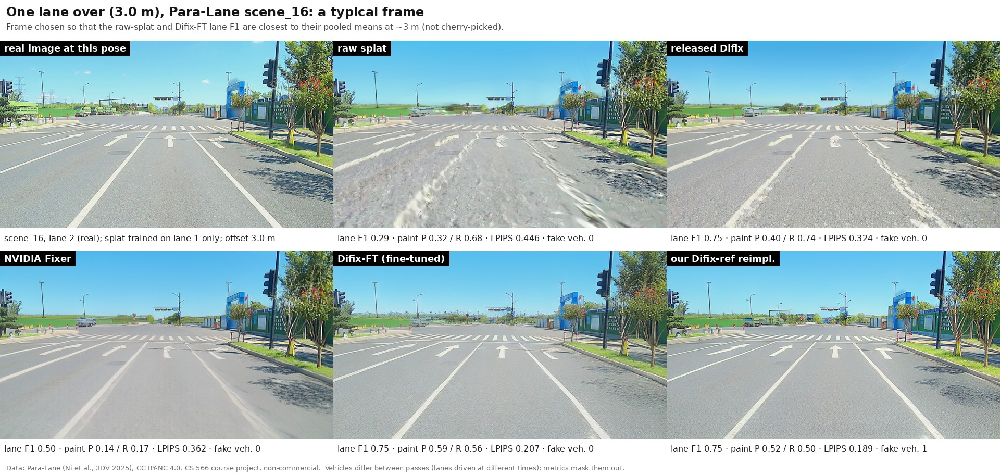
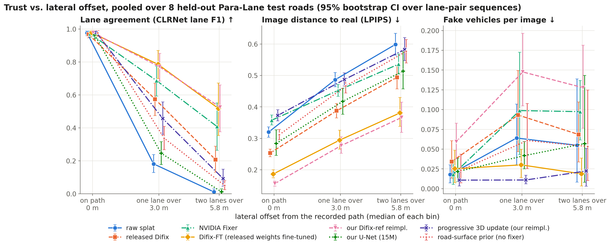
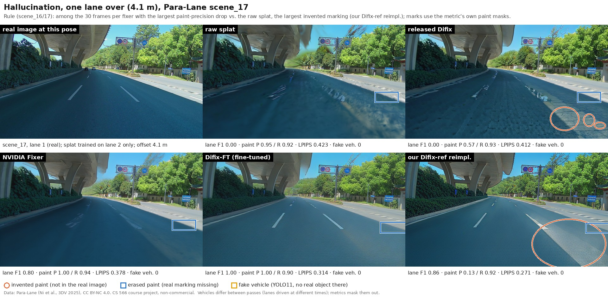
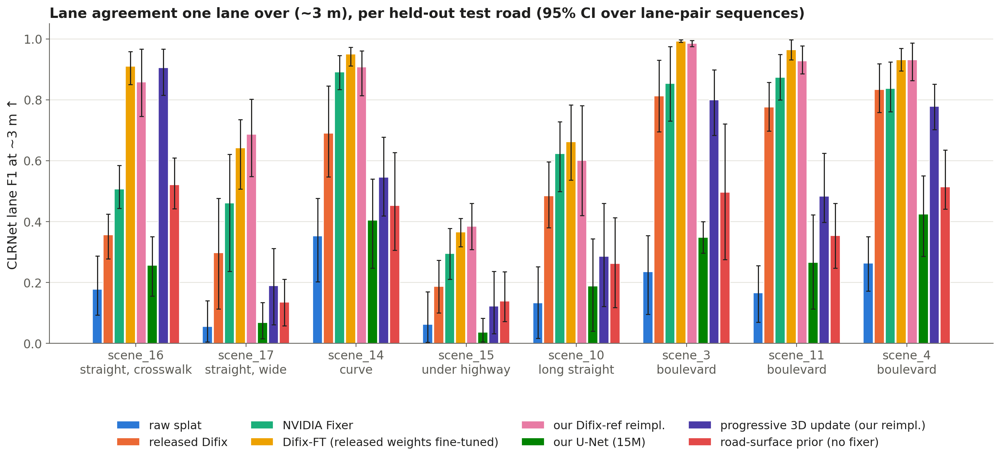
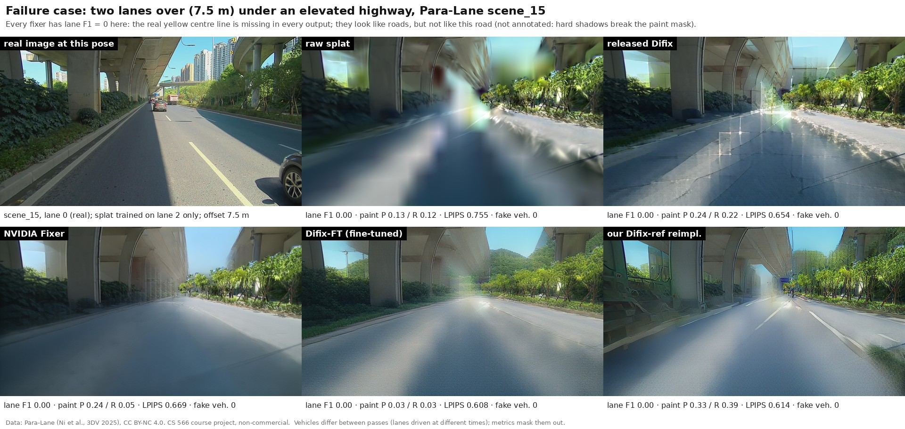
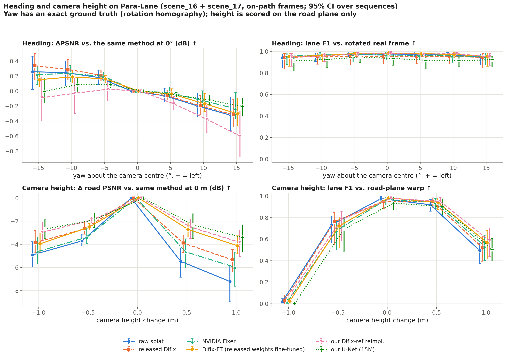
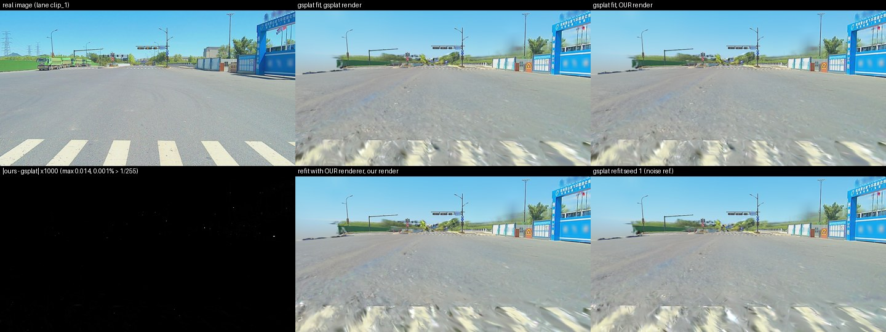

- A Gaussian-splat simulator rebuilt from one drive is trustworthy only near the recorded path: agreement between lanes detected on the render and on the real image falls from 0.98 on the path to 0.18 one lane over (3 m) and 0.01 two lanes over (6 m).
- Diffusion-based fixers recover part of this. Fixers trained on real neighboring-lane pairs reach 0.77–0.79 at 3 m and about 0.5 at 6 m; the released generic ones reach 0.57–0.69 at 3 m.
- Realism and correctness diverge: fixers invent lane paint and vehicles. Repairing the 3D scene instead of each image invents the least.
- Gains depend strongly on the road, do not transfer to other cities, and do not raise closed-loop driving scores.
1. Motivation
Driving software is increasingly tested in simulators reconstructed from real driving logs. The recorded video becomes a 3D Gaussian splat, a scene of millions of small, semi-transparent colored ellipsoids that can be rendered from any camera position, so the simulated vehicle can leave the recorded trajectory. The reconstruction is reliable only near that trajectory. After a lane change, or with a camera mounted higher or lower, the rendered images degrade, and a driving system tested on them may behave differently than on the road.
Both authors are members of Wisconsin Autonomous, a student autonomous-vehicle team, where we test driving software in conventional simulators (MATLAB/Simulink, RoadRunner, CARLA). Their hand-built assets look visibly different from real camera images. Reconstruction-based simulators could close that gap, but only if renders stay faithful off the recorded path. Recent work repairs off-path renders with diffusion models ("fixers") and evaluates them mostly with realism scores such as FID and LPIPS. We ask how far off the path a splat simulator remains trustworthy, and whether fixers restore trust or only make images look more realistic.
2. Approach
The Para-Lane dataset scans the same roads in three parallel lanes, about 3 m and 6–7.7 m apart. We build a splat from one lane and render it at the recorded poses of the other lanes, where real images exist, so every off-path render has a real image at the same pose to compare against.
- Reconstruct a Gaussian splat of each road from one lane (LiDAR initialization and depth supervision, a learned sky model, moving objects masked).
- Render it at the neighboring lanes' real poses, and additionally with the camera turned (heading) or raised and lowered (camera height).
- Repair the renders with each method: the released Difix and NVIDIA Fixer; our re-implementation of the Difix training procedure, trained on neighboring-lane pairs; the released Difix fine-tuned on the same pairs (Difix-FT); a small U-Net trained from scratch; the progressive 3D update of Difix3D+, which adds repaired views back into the splat; and a road-surface prior fitted to LiDAR, which involves no image generation.
- Measure trust against the real image: lane agreement (F1 between CLRNet lanes on the render and on the real image), perceptual distance (LPIPS), invented and erased lane paint, and spurious vehicles (YOLO11 detections with no counterpart in the real image). Intervals are 95% bootstrap intervals over lane-pair sequences.
- Test transfer to other cities (EUVS/MARS in the US, MV2 in India) and closed-loop driving in the HUGSIM simulator with a released policy.
The plan was organized in tiers: a core study (Para-Lane, the released fixers and our Difix re-implementation), extensions (small fixer, road prior, progressive update, more roads, heading) and stretch goals (camera height, other datasets, FaithFusion, closed loop). All tiers were completed.
3. Implementation
| Component | What we implemented | Used as released |
|---|---|---|
| Difix fixer [1] | Training procedure written from the paper: single-step denoising from SD-Turbo at τ = 200, reference-view attention across views, LoRA-tuned decoder with skip connections, L2 + LPIPS + Gram losses. Validated against NVIDIA's official trainer and released weights. | SD-Turbo pretrained weights |
| Splat renderer | Our own projection: world-to-camera transform, 3D covariance, EWA projection, culling, spherical-harmonic color, depth, sky compositing, and the statistics densification needs. | gsplat's tile-sorting and blending CUDA kernels |
| Scene reconstruction | Fitting pipeline for driving logs: LiDAR initialization and depth loss, sky model, moving-object masks, held-out on-path frames. | gsplat densification strategy |
| Progressive 3D update [1] | Repaired pseudo-views at shifted poses added back as training views, with masks for sky and far regions. | – |
| Road-surface prior [15] | Height and slope field fitted to LiDAR; road Gaussians pulled onto it and flattened (ViSE released no code). | – |
| Small fixer | Residual U-Net trained from scratch on the same pairs. | – |
| Evaluation | Neighboring-lane pairing, lane agreement against the real image, lane-paint masks, spurious-vehicle counting, bootstrap statistics, heading (exact rotation warp) and camera-height (road-plane warp) ground truth. | CLRNet and YOLO11 detectors |
| Comparison methods | Integration and batch inference; a small compatibility layer so NVIDIA Fixer runs without NVIDIA Transformer Engine; FaithFusion's information-gain map computed on our splats. | Released Difix, NVIDIA Fixer, FaithFusion, HUGSIM with the LTF policy |
Everything ran on one RTX 3090 (24 GB). Fitting a road takes about 5 minutes, fine-tuning a fixer about an hour, and reconstructing, repairing and scoring one additional road with every method about 1.5–2 GPU-hours.
4. Results
Trust versus lateral offset

| Method | Lane F1, ~3 m | Lane F1, ~6 m | LPIPS, ~3 m | Spurious vehicles / image, ~3 m |
|---|---|---|---|---|
| Raw render | 0.18 [0.13, 0.24] | 0.01 | 0.49 | 0.064 |
| Released Difix | 0.57 [0.47, 0.67] | 0.21 | 0.39 | 0.093 |
| NVIDIA Fixer | 0.69 [0.59, 0.78] | 0.41 | 0.45 | 0.099 |
| Difix-FT (released weights fine-tuned on our pairs) | 0.79 [0.70, 0.87] | 0.52 | 0.29 | 0.030 |
| Our Difix re-implementation | 0.77 [0.68, 0.85] | 0.53 | 0.28 | 0.148 |
| Small U-Net (from scratch) | 0.25 [0.18, 0.32] | 0.01 | 0.42 | 0.042 |
| Progressive 3D update | 0.46 [0.36, 0.56] | 0.09 | 0.49 | 0.011 |
| Road-surface prior | 0.34 [0.27, 0.41] | 0.05 | 0.47 | 0.061 |
On the path every method agrees with the real image (lane F1 0.96–0.98). Our re-implementation adds spurious vehicles on all eight roads (+0.089 per image [+0.062, +0.117] relative to the raw render); Difix-FT does not. The progressive update raises lane F1 by +0.33 [+0.19, +0.49] at about 3 m and produces the fewest spurious vehicles, but helps little at 6 m.
Invented and erased content

Variation across roads


Our Difix training re-implementation
| Model (DL3DV, 3 held-out scenes, sparse views every 30th frame) | PSNR | LPIPS | FID |
|---|---|---|---|
| Raw render | 21.87 | 0.195 | 37.7 |
| Official trainer, matched budget (no reference view) | 19.91 | 0.237 | 36.3 |
| Our trainer, matched budget (no reference view) | 21.20 | 0.218 | 26.1 |
| Released Difix-ref (NVIDIA weights) | 21.77 | 0.163 | 18.9 |
| Our trainer with reference view | 22.08 | 0.167 | 21.2 |
At the same budget and training pairs our trainer outperforms the official trainer (paired ΔLPIPS −0.019 [−0.020, −0.017]). With a reference view it matches NVIDIA's released Difix-ref on LPIPS and has a higher FID. Only the DL3DV sample release was accessible, so this uses three held-out scenes rather than the paper's benchmark.
Heading and camera height

Other cities and closed-loop driving
On EUVS/MARS routes (US) and MV2 car/scooter pairs (India), the fixers trained on Para-Lane do not transfer: the generic released Difix-ref gives the largest LPIPS improvement (EUVS: 0.522 raw, 0.421 Difix-ref), Difix-FT becomes worse than the raw render (0.589), and on MV2 no method exceeds lane F1 0.09.
| HUGSIM closed loop (released LTF policy, 25 scenarios × 3 seeds) | HD-Score | Change vs. no fixer (paired) |
|---|---|---|
| No fixer | 0.408 [0.326, 0.486] | – |
| Released Difix | 0.392 | −0.015 [−0.064, +0.034] |
| Difix-FT | 0.403 | −0.005 [−0.054, +0.048] |
| NVIDIA Fixer | 0.356 | −0.051 [−0.101, −0.004] |
No fixer improves the driving score, and the variation between policy seeds (0.31–0.46) exceeds every fixer effect. FaithFusion's per-pixel information-gain map partly predicts invented lane paint one lane over (AUROC 0.67–0.76), but weighting the progressive update with it made no measurable difference.
Our renderer against gsplat

5. Videos
Side-by-side clips across roads, deviation types and datasets. Each clip states whether a real camera frame exists at that viewpoint.
6. Problems Encountered
- NVIDIA's released Difix trainer needed six fixes to run (undefined names, a missing attribute, an ignored step limit) and exceeded 24 GB with the reference view, so the matched comparison uses the single-view setting.
- DL3DV granted only its sample release, so the re-implementation check uses three held-out scenes. EUVS's rotation-only setting requires nuPlan data under a separate license and was not run.
- The Para-Lane lanes were driven at different times, so traffic differs between render and real image; moving objects are masked in all metrics.
- MV2's poses are normalized (metric scale assumes a 1.40 m car camera), and its two vehicles are about 7.6 m apart laterally, so camera height could not be isolated there; we rely on a road-plane warp of the real image instead.
- The color-and-contrast lane-paint detector also responds to hard shadows and bright curbs on three roads, which makes paint precision and recall noisy there; lane F1 is unaffected.
- FaithFusion's full pipeline depends on an unreleased restorer; NVIDIA Fixer needs NVIDIA Transformer Engine, which we could not build; the other HUGSIM driving policies depend on outdated software.
- The small U-Net trained from scratch mostly blurs and does not transfer. Our first renderer was 12 times slower than gsplat until we restructured its small matrix products.
7. Discussion and Limitations
Off-path trust in a splat simulator is limited to roughly the width of one lane even with the best repair methods, and realism metrics alone overstate it: the method with the best LPIPS invents the most vehicles. Repairing the 3D scene instead of each image is the most conservative option, but its benefit varies widely between roads. Fixers trained on one city do not carry over to others, and none changes closed-loop driving scores in HUGSIM.
The main results come from one city, one camera rig and daytime conditions, with eight test roads. Lane and vehicle detectors are proxies for what a driving system perceives, and the closed-loop results rest on a single released policy.
8. Source and Executable Code
The code is at github.com/ksha23/cs566-D-drive-sim-trust (download as ZIP). The repository contains the full pipeline, a stage-by-stage reproduction guide with runtimes, and three command-line tools:
src/tools/render_offpath.py: render a fitted splat at shifted, turned or raised camera poses.src/tools/fix_folder.py: apply any of the fixers to a folder of rendered images.src/tools/pair_metrics.py: compute the trust metrics for render and real image pairs.
References and Data
- Difix3D+: Improving 3D reconstructions with single-step diffusion models, CVPR 2025 — arXiv
- FaithFusion: harmonizing reconstruction and generation via pixel-wise information gain, CVPR 2026 — arXiv
- HUGSIM: a real-time, photo-realistic and closed-loop simulator for autonomous driving, TPAMI 2026 — arXiv
- NVIDIA Fixer — GitHub
- ReconDreamer, CVPR 2025 — arXiv; PRG-Fusion, 2026 — arXiv
- EUVS benchmark, ICCV 2025 — arXiv; Para-Lane, 3DV 2025 — arXiv; MV2, ECCV 2026 — arXiv
- 3D Gaussian Splatting, SIGGRAPH 2023 — arXiv; CLRNet, CVPR 2022 — arXiv; ViSE, ICCV 2025 — arXiv
Images and videos on this page are derived from Para-Lane (CC BY-NC 4.0), nuScenes via HUGSIM (CC BY-NC-SA 4.0) and EUVS/MARS (CC BY-NC-SA 4.0) for non-commercial academic purposes. No datasets or model weights are distributed here.